pacman::p_load(sf, tmap, tidyverse)H2: Thematic Mapping and GeoVisualisation with R
Hands-On Exercise 2
H2.1 Overview
While thematic mapping uses map symbols to visualise geographic properties such as population and temperature, geovisualisation is a subset of thematic mapping, where a pseudocolour is used to correspond with these geographic properties.
H2.2 Getting Started
tmap contains the packages needed to perform geovisualisation, so we need to import that along with the usual packages we use.
H2.3 Importing Data into R
The datasets to be used are:
- Master Plan 2014 Subzone Boundary (Web)(
MP14_SUBZONE_WEB_PL) in ESRI shapefile format
mp_subzone <- st_read(dsn = "../data/geospatial/MasterPlan2014SubzoneBoundaryWebSHP", layer = "MP14_SUBZONE_WEB_PL")Reading layer `MP14_SUBZONE_WEB_PL' from data source
`/Users/kendricktty/Gits/smu_cs/is415-site/HandsOn/data/geospatial/MasterPlan2014SubzoneBoundaryWebSHP'
using driver `ESRI Shapefile'
Simple feature collection with 323 features and 15 fields
Geometry type: MULTIPOLYGON
Dimension: XY
Bounding box: xmin: 2667.538 ymin: 15748.72 xmax: 56396.44 ymax: 50256.33
Projected CRS: SVY21mp_subzoneSimple feature collection with 323 features and 15 fields
Geometry type: MULTIPOLYGON
Dimension: XY
Bounding box: xmin: 2667.538 ymin: 15748.72 xmax: 56396.44 ymax: 50256.33
Projected CRS: SVY21
First 10 features:
OBJECTID SUBZONE_NO SUBZONE_N SUBZONE_C CA_IND PLN_AREA_N
1 1 1 MARINA SOUTH MSSZ01 Y MARINA SOUTH
2 2 1 PEARL'S HILL OTSZ01 Y OUTRAM
3 3 3 BOAT QUAY SRSZ03 Y SINGAPORE RIVER
4 4 8 HENDERSON HILL BMSZ08 N BUKIT MERAH
5 5 3 REDHILL BMSZ03 N BUKIT MERAH
6 6 7 ALEXANDRA HILL BMSZ07 N BUKIT MERAH
7 7 9 BUKIT HO SWEE BMSZ09 N BUKIT MERAH
8 8 2 CLARKE QUAY SRSZ02 Y SINGAPORE RIVER
9 9 13 PASIR PANJANG 1 QTSZ13 N QUEENSTOWN
10 10 7 QUEENSWAY QTSZ07 N QUEENSTOWN
PLN_AREA_C REGION_N REGION_C INC_CRC FMEL_UPD_D X_ADDR
1 MS CENTRAL REGION CR 5ED7EB253F99252E 2014-12-05 31595.84
2 OT CENTRAL REGION CR 8C7149B9EB32EEFC 2014-12-05 28679.06
3 SR CENTRAL REGION CR C35FEFF02B13E0E5 2014-12-05 29654.96
4 BM CENTRAL REGION CR 3775D82C5DDBEFBD 2014-12-05 26782.83
5 BM CENTRAL REGION CR 85D9ABEF0A40678F 2014-12-05 26201.96
6 BM CENTRAL REGION CR 9D286521EF5E3B59 2014-12-05 25358.82
7 BM CENTRAL REGION CR 7839A8577144EFE2 2014-12-05 27680.06
8 SR CENTRAL REGION CR 48661DC0FBA09F7A 2014-12-05 29253.21
9 QT CENTRAL REGION CR 1F721290C421BFAB 2014-12-05 22077.34
10 QT CENTRAL REGION CR 3580D2AFFBEE914C 2014-12-05 24168.31
Y_ADDR SHAPE_Leng SHAPE_Area geometry
1 29220.19 5267.381 1630379.3 MULTIPOLYGON (((31495.56 30...
2 29782.05 3506.107 559816.2 MULTIPOLYGON (((29092.28 30...
3 29974.66 1740.926 160807.5 MULTIPOLYGON (((29932.33 29...
4 29933.77 3313.625 595428.9 MULTIPOLYGON (((27131.28 30...
5 30005.70 2825.594 387429.4 MULTIPOLYGON (((26451.03 30...
6 29991.38 4428.913 1030378.8 MULTIPOLYGON (((25899.7 297...
7 30230.86 3275.312 551732.0 MULTIPOLYGON (((27746.95 30...
8 30222.86 2208.619 290184.7 MULTIPOLYGON (((29351.26 29...
9 29893.78 6571.323 1084792.3 MULTIPOLYGON (((20996.49 30...
10 30104.18 3454.239 631644.3 MULTIPOLYGON (((24472.11 29...unique(mp_subzone$REGION_N)[1] "CENTRAL REGION" "WEST REGION" "EAST REGION"
[4] "NORTH-EAST REGION" "NORTH REGION" - Singapore Residents by Planning Area / Subzone, Age Group, Sex and Type of Dwelling, June 2011-2020 (aspatial)
population_data <- read_csv("../data/aspatial/respopagesextod2011to2020/respopagesextod2011to2020.csv")Rows: 984656 Columns: 7
── Column specification ────────────────────────────────────────────────────────
Delimiter: ","
chr (5): PA, SZ, AG, Sex, TOD
dbl (2): Pop, Time
ℹ Use `spec()` to retrieve the full column specification for this data.
ℹ Specify the column types or set `show_col_types = FALSE` to quiet this message.head(population_data)# A tibble: 6 × 7
PA SZ AG Sex TOD Pop Time
<chr> <chr> <chr> <chr> <chr> <dbl> <dbl>
1 Ang Mo Kio Ang Mo Kio Town Centre 0_to_4 Males HDB 1- and 2-Room … 0 2011
2 Ang Mo Kio Ang Mo Kio Town Centre 0_to_4 Males HDB 3-Room Flats 10 2011
3 Ang Mo Kio Ang Mo Kio Town Centre 0_to_4 Males HDB 4-Room Flats 30 2011
4 Ang Mo Kio Ang Mo Kio Town Centre 0_to_4 Males HDB 5-Room and Exe… 50 2011
5 Ang Mo Kio Ang Mo Kio Town Centre 0_to_4 Males HUDC Flats (exclud… 0 2011
6 Ang Mo Kio Ang Mo Kio Town Centre 0_to_4 Males Landed Properties 0 2011The data appears to be arranged in order of planning area, so by calling head(), the first few rows feature entries located in the good town of Ang Mo Kio.
H2.3.4 Data Preparation
To prepare our thematic map visualising the distribution of Singapore residents of various attributes, we need to filter the population dataset to only include values from the year 2020.
H2.3.4.0 %>% Operator
The %>% operator is used extensively here, so as an R beginner, it might be worth summarising what it does. Basically, %>% is a pipe that directs the output of the function called to its left to the one called on its right.
quadratic_function <- function(x) {
return(x * x)
}
add_3 <- function(x) {
return(x + 3)
}
multiply_2 <- function(x) {
return(x * 2)
}
three_plus_three_times_2 <- 3 %>%
multiply_2() %>%
add_3() %>%
multiply_2()
print("Expected: 18")[1] "Expected: 18"print(paste("Actual:", three_plus_three_times_2, sep = " "))[1] "Actual: 18"The alternative would be to create a large composite list of functions within functions, which would make our code difficult to read:
three_plus_three_times_2 <- multiply_2(add_3(multiply_2(3)))
print("Expected: 18")[1] "Expected: 18"print(paste("Actual:", three_plus_three_times_2, sep = " "))[1] "Actual: 18"In the context of data preprocessing, the %>% would be akin, in Python, to chaining multiple pandas methods together in the same line, such that the operations are also performed from left to right. For example:
df = pd.read_csv()
df.fillna().head()H2.3.4.1 Data wrangling
Great! Now that we’ve explained %>%, let’s now move on to the more complicated job of feature-engineering the population data.
population_2020 <- population_data %>%
filter(Time == 2020) %>%
group_by(PA, SZ, AG) %>%
summarise(`POP` = sum(`Pop`)) %>%
ungroup() %>%
pivot_wider(names_from = AG, values_from = POP)`summarise()` has grouped output by 'PA', 'SZ'. You can override using the
`.groups` argument.colnames(population_2020) [1] "PA" "SZ" "0_to_4" "10_to_14" "15_to_19"
[6] "20_to_24" "25_to_29" "30_to_34" "35_to_39" "40_to_44"
[11] "45_to_49" "50_to_54" "55_to_59" "5_to_9" "60_to_64"
[16] "65_to_69" "70_to_74" "75_to_79" "80_to_84" "85_to_89"
[21] "90_and_over"population_2020 <- population_2020 %>%
# As young boys in Singapore serve 2 years of national service, the earliest age to be considered economically active should be 25.
mutate(`YOUNG` = rowSums(.[3:6]) + rowSums(.[14])) %>%
# By 2026, the retirement age in Singapore will be raised to 64.
mutate(`ECONOMY ACTIVE` = rowSums(.[7:13]) + rowSums(.[15])) %>%
mutate(`AGED` = rowSums(.[16:21])) %>%
mutate(`TOTAL` = rowSums(.[3:21])) %>%
mutate(`DEPENDENCY` = (`YOUNG` + `AGED`)
/ `ECONOMY ACTIVE`) %>%
select(
`PA`, `SZ`, `YOUNG`,
`ECONOMY ACTIVE`, `AGED`,
`TOTAL`, `DEPENDENCY`
)H2.3.4.2 Joining attribute and geospatial data
A georelational join will now need to be performed to combine them into the same table.
Before we can do so, though, we need to convert the PA and SZ fields to uppercase, to unify its presentation with teh SUBZONE_N and PLN_AREA_N fields.
population_2020 <- population_2020 %>%
mutate_at(.vars = vars(PA, SZ), .funs = list(toupper)) %>%
filter(`ECONOMY ACTIVE` > 0)We can now perform a left join (from the dplyr function) between the subzone geospatial data and the population data on the SUBZONE_N and SZ identifiers:
combined <- left_join(mp_subzone, population_2020, by = c("SUBZONE_N" = "SZ"))H2.4 Choropleth mapping using tmap
We can now create our choropleth map.
As adapted from the course website:
Choropleth mapping involves the symbolisation of enumeration units, such as countries, provinces, states, counties or census units, using area patterns or graduated colors. For example, a social scientist may need to use a choropleth map to portray the spatial distribution of aged population of Singapore by Master Plan 2014 Subzone Boundary.
Two approaches can be used to prepare thematic map using tmap, they are:
- Plotting a thematic map quickly by using qtm().
- Plotting highly customisable thematic map by using tmap elements.
H2.4.1 Plotting a choropleth map quickly using qtm()
The easiest and quickest way to draw a chloropleth map is using qtm():
tmap_mode("plot")tmap mode set to plottingqtm(combined,
fill = "DEPENDENCY"
)
This map indicates that the dependency ratio in most of the island is a supposedly healthy 5 and below. Missing datapoints correspond with major commercial nodes and key installations in the country (such as Changi Airport in the east, the central catchment nature reserve, the downtown core and industrial estates in Jurong and Tuas), while Changi Village (the patch of red) seems to have the highest percentage of dependents.
Learning points:
tmap_mode()with“plot”option is used to produce a static map. For interactive mode,“view”option should be used.
fillargument is used to map the attribute (in this case,"DEPENDENCY")
H2.4.2 Creating a choropleth map using tmap elements
A major disadvantage of qtm() is that it makes aesthetics of individual layers harder to control. Using the tmap elements allows us to draw better quality cartographic choropleth maps like the one below.
tm_shape(combined) +
tm_fill("DEPENDENCY",
style = "quantile",
palette = "Blues",
title = "Dependency ratio"
) +
tm_layout(
main.title = "Distribution of Dependency Ratio by planning subzone",
main.title.position = "center",
main.title.size = 1.2,
legend.height = 0.45,
legend.width = 0.35,
frame = TRUE
) +
tm_borders(alpha = 0.5) +
tm_compass(type = "8star", size = 2) +
tm_scale_bar() +
tm_grid(alpha = 0.2) +
tm_credits("Source: Planning Sub-zone boundary from Urban Redevelopment Authorithy (URA)\n and Population data from Department of Statistics DOS",
position = c("left", "bottom")
)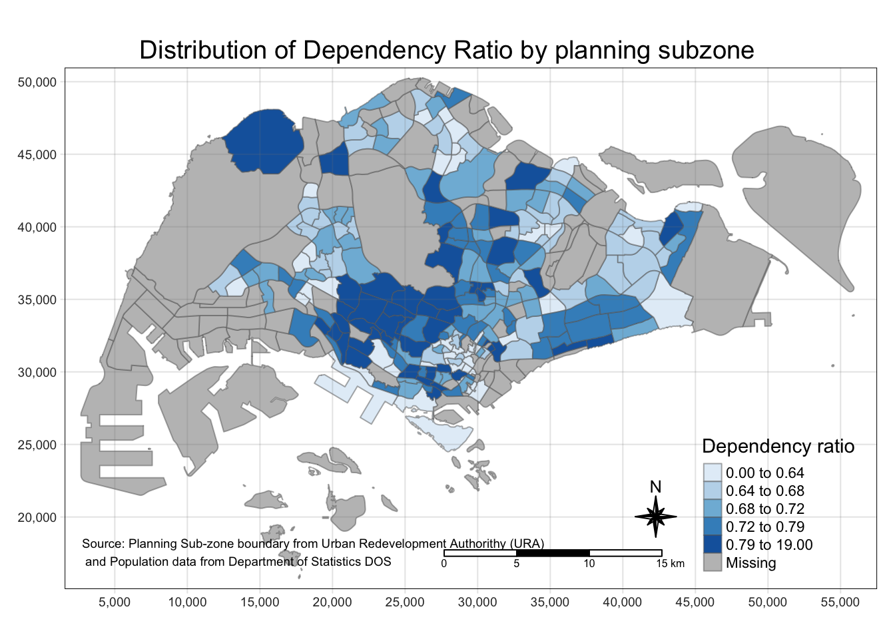
Once again the missing datapoints correspond to areas of the country not dedicated to residential use, but this time we have a much more varied visualisation of the dependency ratio within the country. The areas with the highest dependency ratio appear to correlate with the oldest HDB estates, from Toa Payoh to Queenstown, while the newer estates such as Sengkang, Punggol and even Yishun have a smaller proportion of dependents.
H2.4.2.1 Drawing a base map
In the code chunk below, tm_shape() is used to define the input data (i.e comined) and tm_polygons() is used to draw the planning subzone polygons.
tm_shape(combined) + tm_polygons()
2.4.2.2 Drawing a choropleth map using tm_polygons()
To draw a choropleth map showing the geographical distribution of a selected variable by planning subzone, we just need to assign that target variable to tm_polgyons(). The maps below show higher than usual populations of young dependents in Woodlands, Sengkang, Punggol, Tampines and Pasir Ris, and higher than usual populations of elderly dependents in Ang Mo Kio, Hougang and Bedok.
tm_shape(combined) + tm_polygons("YOUNG")
tm_shape(combined) + tm_polygons("AGED")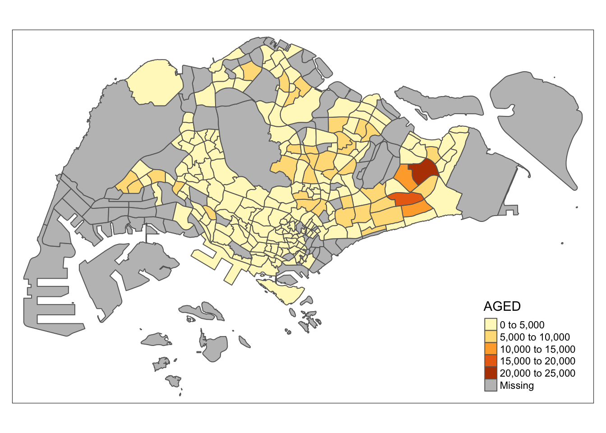
Things to learn from
tm_polygons():
The default interval binning used to draw the choropleth map is called “pretty”. A detailed discussion of the data classification methods supported by tmap will be provided in sub-section 4.3.
The default colour scheme used is
YlOrRdof ColorBrewer. You will learn more about the color scheme in sub-section 4.4.By default, missing values are shaded in grey.
H2.4.2.3 Drawing a choropleth map with tm_fill() and tm_border()
tm_polygons() is a wrapper of tm_fill() and tm_border(), which shades the polygons and adds borders from the shapefile onto the map respectively. Let’s see what happens when we try to use each of these two functions individually:
tm_shape(combined) + tm_fill("DEPENDENCY")
tm_shape(combined) + tm_borders(lwd = 0.1, alpha = 1)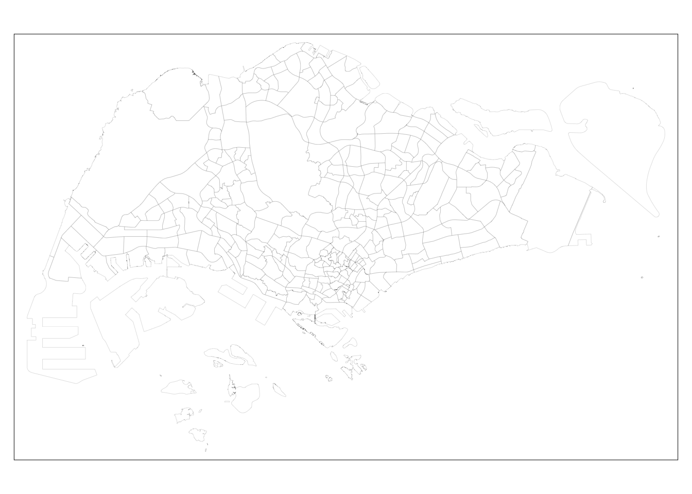
tm_shape(combined) + tm_fill("DEPENDENCY") + tm_borders(lwd = 0.1, alpha = 1)
The alpha argument is used to define a transparency number between 0 (totally transparent) and 1 (not transparent). By default, the alpha value of the col is used (normally 1).
The three other arguments for tm_borders() are:
col: border colourlwd: border line width (default1)lty: border line type (defaultsolid)
H2.4.3 Data classification methods of tmap
Data classification serves to take a large number of observations and group them into data ranges or classes. tmap provides a total ten data classification methods, namely fixed, sd, equal, pretty (default), quantile, kmeans, hclust, bclust, fisher, and jenks. A data classification method is defined using the style argument of the tm_fill() or tm_polygons() method.
H2.4.3.1 Plotting choropleth maps with built-in classification methods
A quantile data classification with 4 classes:
tm_shape(combined) +
tm_fill("AGED",
n = 4,
style = "quantile"
) +
tm_borders(alpha = 0.5)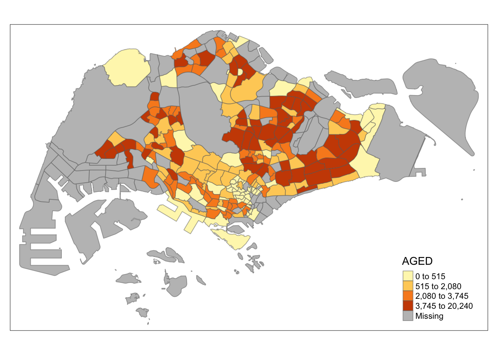
An equal data classification:
tm_shape(combined) +
tm_fill("AGED",
n = 5,
style = "equal"
) +
tm_borders(alpha = 0.5)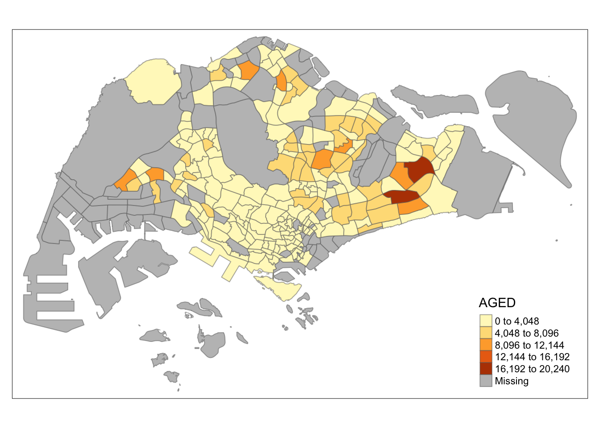
Using standard deviation:
tm_shape(combined) +
tm_fill("AGED",
n = 4,
style = "sd"
) +
tm_borders(alpha = 0.5)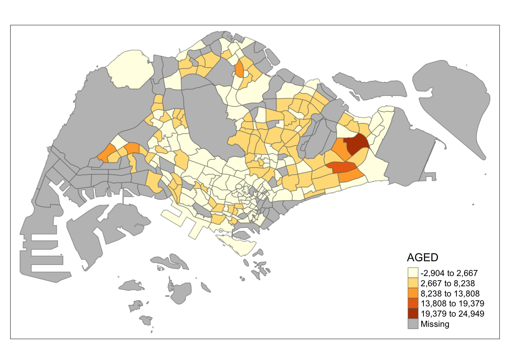
Using K-means classification with 5, 10 and 15 class sizes:
# for (i in 1:3) {
# tm_shape(combined) +
# tm_fill("AGED", n = (5 * i), style = "kmeans") +
# tm_borders(alpha = 0.5)
# }
tm_shape(combined) +
tm_fill("AGED",
n = 5,
style = "kmeans"
) +
tm_borders(alpha = 0.5)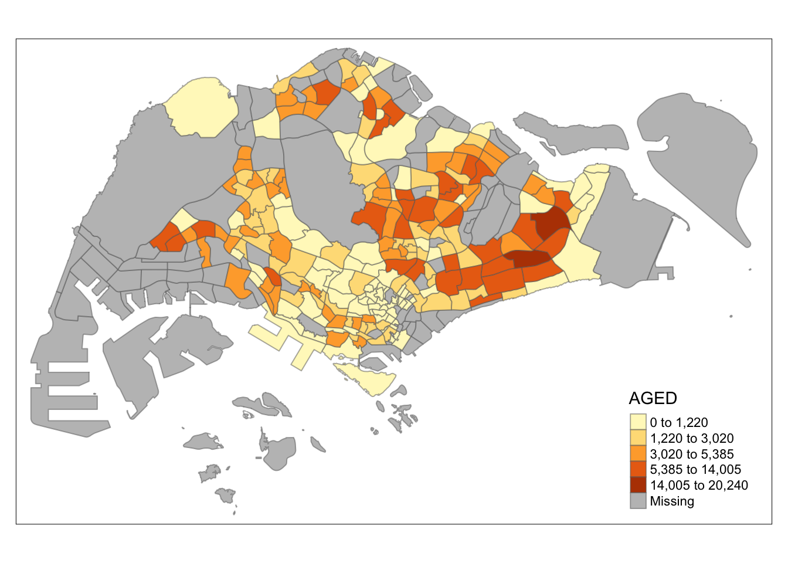
tm_shape(combined) +
tm_fill("AGED",
n = 10,
style = "kmeans"
) +
tm_borders(alpha = 0.5)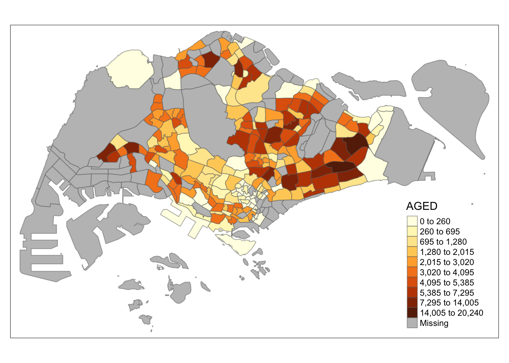
tm_shape(combined) +
tm_fill("AGED",
n = 15,
style = "kmeans"
) +
tm_borders(alpha = 0.5)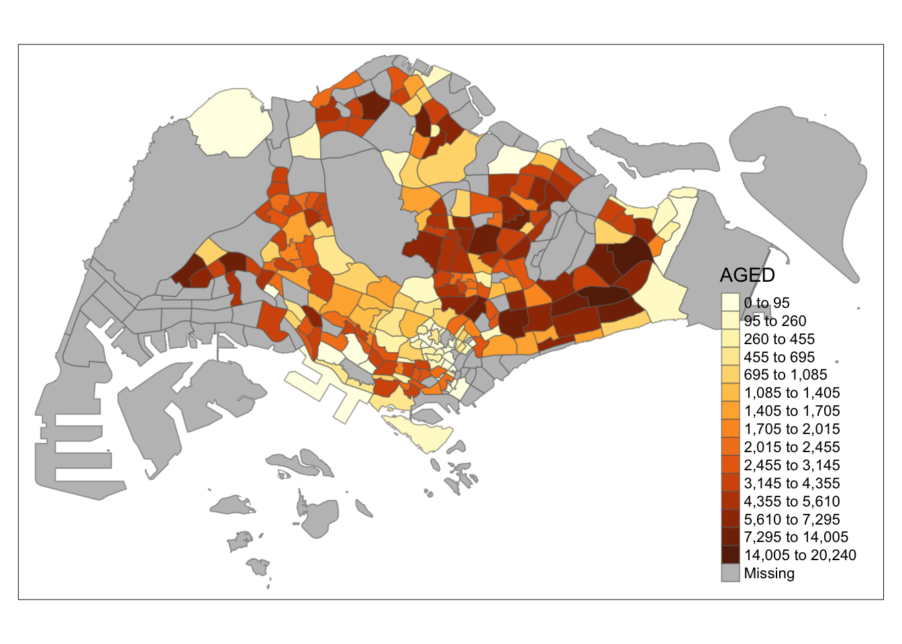
The quantile and kmeans with higher n classifications are able to highlight the distribution of elderly dependents in Singapore the most clearly. The largest distributions of elderly dependents are clustered in the central, northeast and east of Singapore, with small pockets in the north and west.
H2.4.3.2 Plotting choropleth maps with custom breaks
Category breaks in the built-in styles are calculated automatically. We can override the default breaks by using the breaks argument in tm_fill() to set our own breakpoints.
It is important to note that, in tmap the breaks include a minimum and maximum. As a result, in order to end up with n categories, n+1 elements must be specified in the breaks option (the values must be in increasing order).
Before we move on though, it is a good practice to retrieve our variable’s descriptive statistics - mean, median, quartiles, min and max. I’m supposed to work on the DEPENDENCY feature, but because I’m interested to map the concentration of our elderly population, I will work instead on the AGED feature.
summary(combined$AGED) Min. 1st Qu. Median Mean 3rd Qu. Max. NA's
0 515 2080 2667 3745 20240 92 We are most interested in which regions of the country contain the range between the first and third quartiles - within which also lies the mean and median. This is a universally-understood indicator of central tendency.
As such, our breakpoints will be the following vector:
aged_breaks <- c(0, 514, 2079, 2666, 3744, 20240)where aged_breaks[1] and aged_breaks[6] are the min and max respectively. In R, indexes start at 1, and not 0 as is the case of 0-indexed languages like Python, C or Java.
H2.4.4 Colour Scheme
With our statistically-derived breakpoints now set, we can now move on to plotting our more statistically informed choropleth map.
SimCity 4, which I play a lot of, plots age-related data for in-game cities using a colour ramp of green (lowest) and blue (highest). Therefore, to showcase the use of tm_fill()’s palette argument for colouring, we can define a colour vector to use to colour our map in that manner.
tm_shape(combined) +
tm_fill("AGED", breaks=aged_breaks, palette=c("green", "blue")) +
tm_borders(alpha=0.5)
Or we could use one of the built-in single-colour palettes as such:
tm_shape(combined) +
tm_fill("AGED", breaks=aged_breaks, palette="Purples") +
tm_borders(alpha=0.5)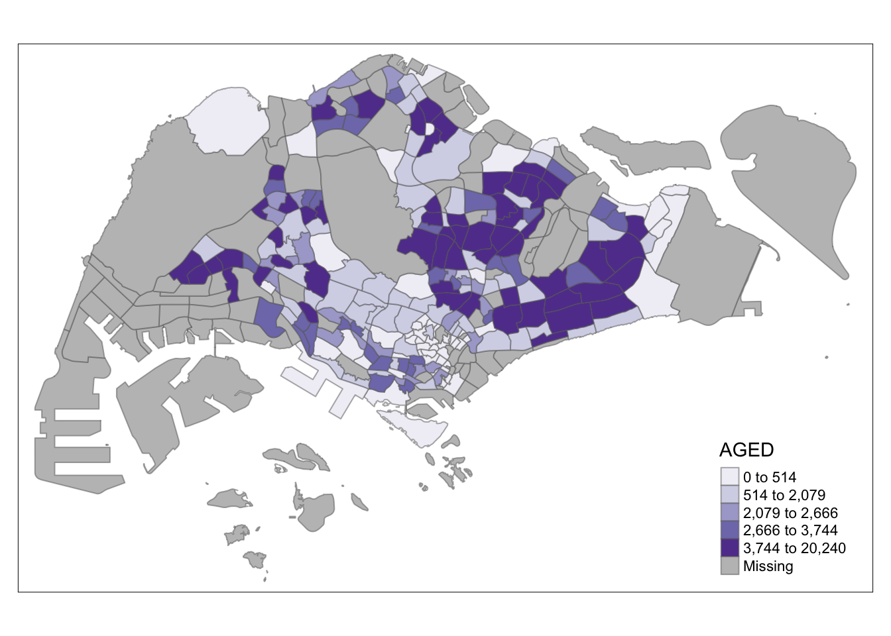
To reverse the colour shading, we can add a “-” prefix:
tm_shape(combined) +
tm_fill("AGED", breaks=aged_breaks, palette="-Oranges") +
tm_borders(alpha=0.5)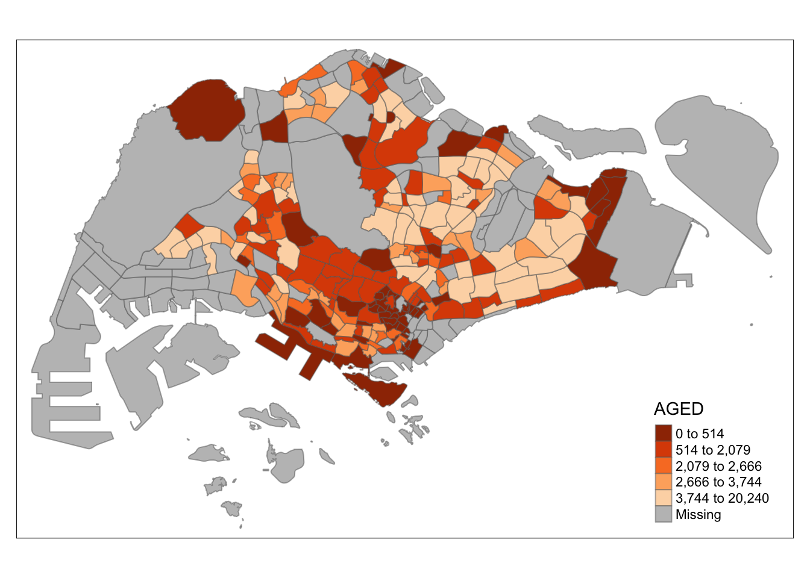
H2.4.5 Map Layouts
H2.4.5.1 Map Legend
From this section onward, we will revert to working on the DEPENDENCY feature.
In tmap, several legend options are provided to change the placement, format and appearance of the legend.
tm_shape(combined)+
tm_fill("DEPENDENCY",
style = "jenks",
palette = "Oranges",
legend.hist = TRUE,
legend.is.portrait = TRUE,
legend.hist.z = 0.1) +
tm_layout(main.title = "Distribution of Dependency Ratio by planning subzone \n(Jenks classification)",
main.title.position = "center",
main.title.size = 1,
legend.height = 0.45,
legend.width = 0.35,
legend.outside = FALSE,
legend.position = c("right", "bottom"),
frame = FALSE) +
tm_borders(alpha = 0.5)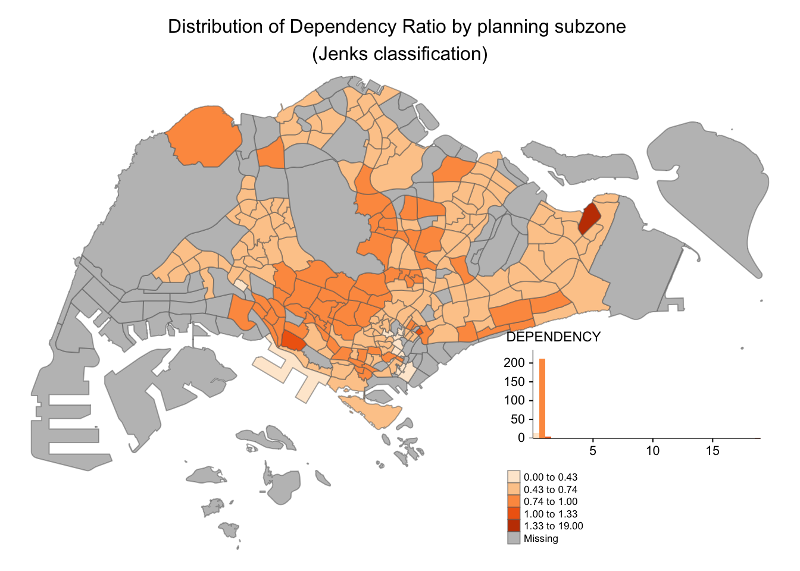
H2.4.5.2 Map style
We can also change the map style by calling tmap_style().
tm_shape(combined)+
tm_fill("DEPENDENCY",
style = "quantile",
palette = "Greens") +
tm_borders(alpha = 0.5) +
tmap_style("classic")tmap style set to "classic"other available styles are: "white", "gray", "natural", "cobalt", "col_blind", "albatross", "beaver", "bw", "watercolor" 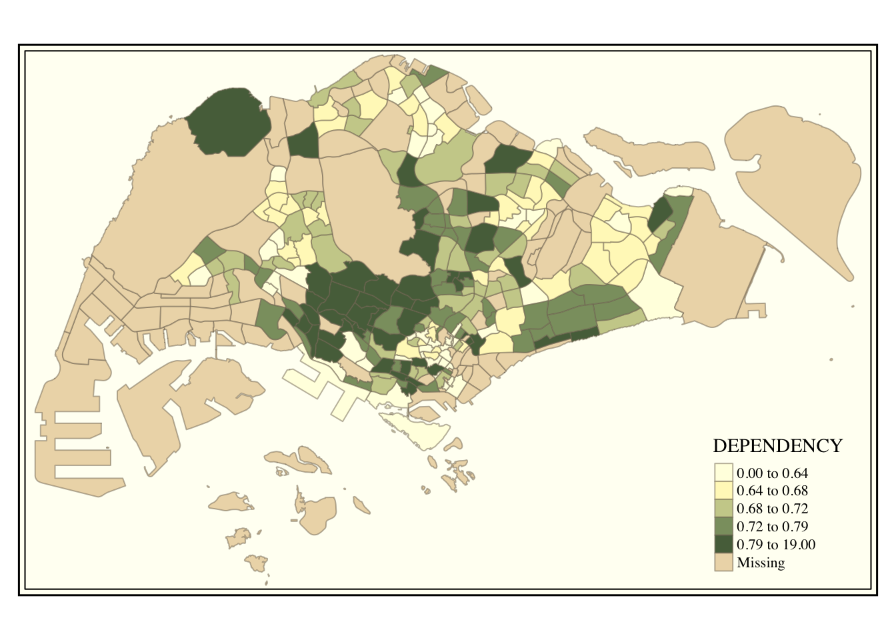
H2.4.5.3 Cartographic furniture
Besides map style, tmap also allows us to draw other map furniture like compasses, scale bars and grid lines. In the code chunk below, tm_compass(), tm_scale_bar() and tm_grid() are used to add a compass, scale bar and grid lines respectively to the map.
tm_shape(combined)+
tm_fill("DEPENDENCY",
style = "quantile",
palette = "Greens",
title = "No. of persons") +
tm_layout(main.title = "Distribution of Dependency Ratio \nby planning subzone",
main.title.position = "center",
main.title.size = 1.2,
legend.height = 0.45,
legend.width = 0.35,
frame = TRUE) +
tm_borders(alpha = 0.5) +
tm_compass(type="8star", size = 2) +
tm_scale_bar(width = 0.15) +
tm_grid(lwd = 0.1, alpha = 0.2) +
tm_credits("Source: Planning Sub-zone boundary from Urban Redevelopment Authorithy (URA)\n and Population data from Department of Statistics DOS",
position = c("left", "bottom"))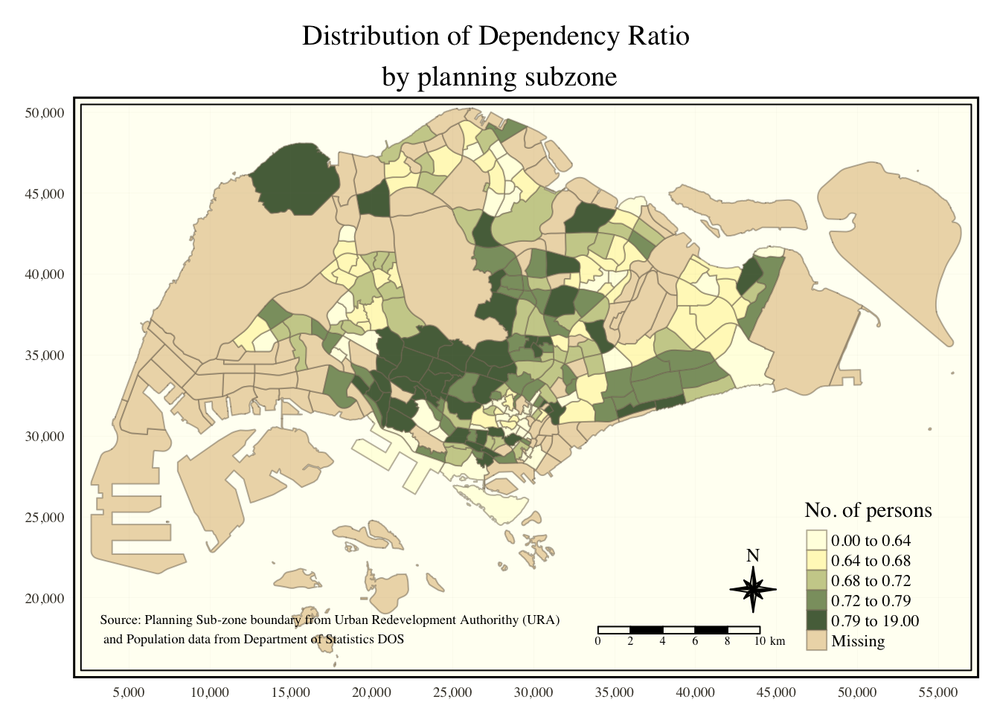
Finally, the following code chunk resets the default style.
tmap_style("white")tmap style set to "white"other available styles are: "gray", "natural", "cobalt", "col_blind", "albatross", "beaver", "bw", "classic", "watercolor" H2.4.6 Drawing small multiple choropleth maps
From the course outline:
Small multiple maps, also referred to as facet maps, are composed of many maps arrange side-by-side, and sometimes stacked vertically. Small multiple maps enable the visualisation of how spatial relationships change with respect to another variable, such as time.
In
tmap, small multiple maps can be plotted in three ways:
- by assigning multiple values to at least one of the asthetic arguments,
- by defining a group-by variable in tm_facets(), and
- by creating multiple stand-alone maps with tmap_arrange().
H2.4.6.1 By assigning multiple values to at least one of the aesthetic arguments
tm_shape(combined)+
tm_fill(c("YOUNG", "AGED"),
style = "equal",
palette = "Blues") +
tm_layout(legend.position = c("right", "bottom")) +
tm_borders(alpha = 0.5) +
tmap_style("white")tmap style set to "white"other available styles are: "gray", "natural", "cobalt", "col_blind", "albatross", "beaver", "bw", "classic", "watercolor" 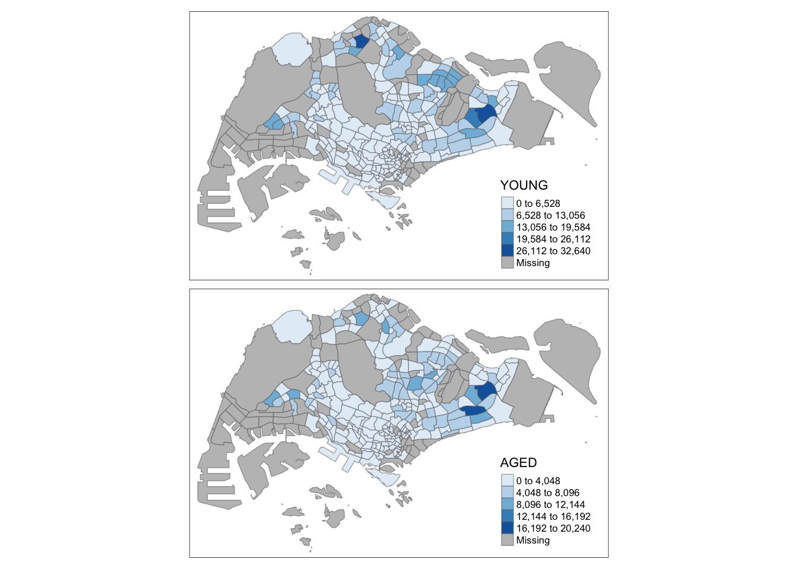
tm_shape(combined)+
tm_polygons(c("DEPENDENCY", "AGED"),
style = c("equal", "quantile"),
palette = list("Blues", "Greens")) +
tm_layout(legend.position = c("right", "bottom"))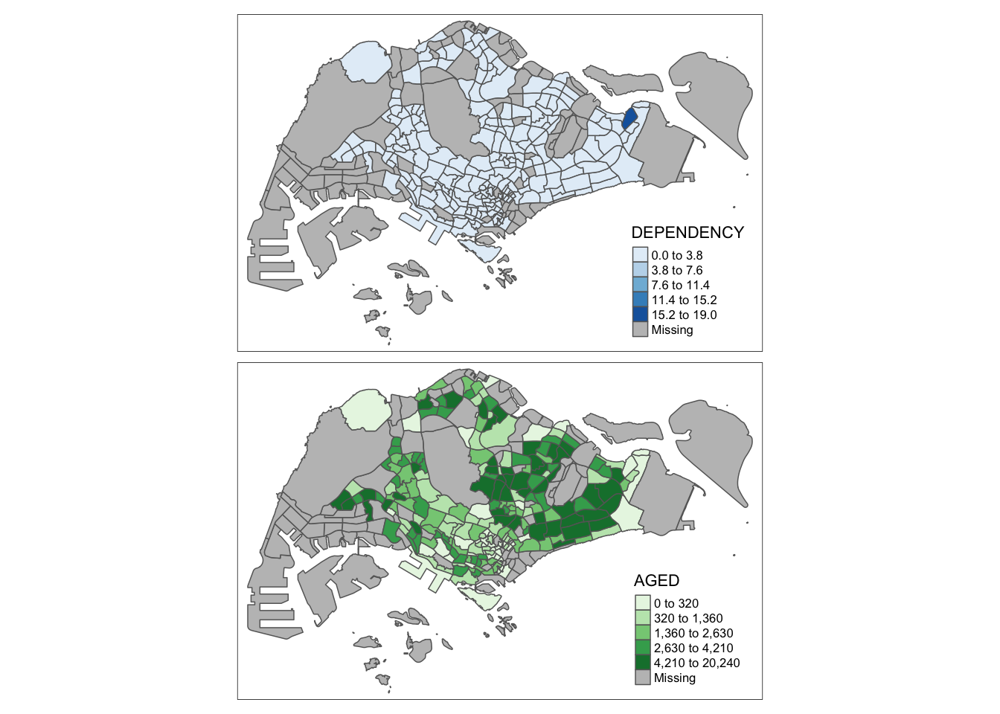
H2.4.6.2 By defining a group-by variable in tm_facets()
Helpful for separating our choropleth map by regions:
tm_shape(combined) +
tm_fill("DEPENDENCY",
style = "quantile",
palette = "Blues",
thres.poly = 0) +
tm_facets(by="REGION_N",
free.coords=TRUE,
drop.shapes=TRUE) +
tm_layout(legend.show = FALSE,
title.position = c("center", "center"),
title.size = 20) +
tm_borders(alpha = 0.5)Warning: The argument drop.shapes has been renamed to drop.units, and is
therefore deprecated
H2.4.6.3 By creating multiple standalone maps with tmap_arrange()
youngmap <- tm_shape(combined)+
tm_polygons("YOUNG",
style = "quantile",
palette = "Blues")
agedmap <- tm_shape(combined)+
tm_polygons("AGED",
style = "quantile",
palette = "Blues")
tmap_arrange(youngmap, agedmap, asp=1, ncol=2)
H2.4.7 Mapping Spatial Objects meeting a selection criterion
Sometimes we may not have the screen real estate to create multiple small choropleth maps. In such a situation, we can use a selection function to map spatial objects meeting a selection criterion.
In the following code chunk, our selection function will map out the distribution of dependents in only the northeast region of the country.
# tm_shape(combined[combined$REGION_N=="NORTHEAST REGION", ])+
# tm_fill("DEPENDENCY",
# n = 10,
# style = "kmeans",
# legend.hist = TRUE,
# legend.is.portrait = TRUE,
# legend.hist.z = 0.1) +
# tm_layout(legend.outside = TRUE,
# legend.height = 0.45,
# legend.width = 5.0,
# legend.position = c("right", "bottom"),
# frame = FALSE) +
# tm_borders(alpha = 0.5)